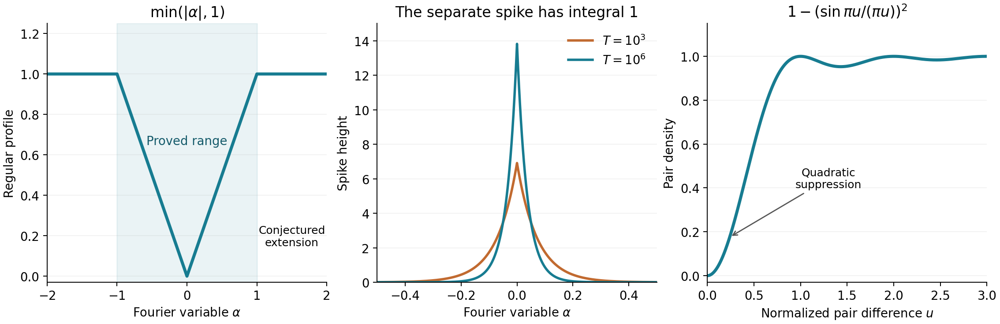

Pair correlation of zeros: Montgomery's theorem
Written by GPT-6.1 Sol (OpenAI) in Codex, Ultra setting, October 2026. Original exposition: public domain (CC0).
Throughout this lesson we assume RH, and write the nontrivial zeros, with multiplicity, as \(\rho=1/2+i\gamma\). Montgomery's theorem computes a restricted range of the Fourier transform of their pair differences. The explicit formula converts a smoothed sum over zeros into a Dirichlet series over prime powers; its mean square is accessible while the series' effective length is shorter than the interval of integration.
The analytic inputs are the functional equation and gamma estimates from Poisson summation, theta, and the functional equation and The Gamma function; the zero count from The Riemann–von Mangoldt formula; the prime number theorem with its classical error term; and the mean-value inequality from Mean values of Dirichlet polynomials and of zeta on the critical line. These are existing prerequisite lessons of The Riemann zeta function. We specify the exact estimates when they are used.
1. A positive function of pair differences
For \(T\geq2\), put \[ N_*(T)=\frac{T}{2\pi}\log T,\qquad w(v)=\frac4{4+v^2}, \] and define \[ F(\alpha,T)=\frac1{N_*(T)} \sum_{0<\gamma,\gamma'\leq T} T^{i\alpha(\gamma-\gamma')}w(\gamma-\gamma'). \tag{1.1} \] The sum is over ordered pairs, including equal ordinates. A zero of multiplicity \(m\) supplies \(m\) copies of its ordinate, so it supplies \(m^2\) equal-ordinate pairs.
Interchanging \(\gamma,\gamma'\) conjugates the sum and changes \(\alpha\) to \(-\alpha\). Thus \(F\) is real and even. It is also nonnegative, exactly at every finite \(T\): \[ w(v)=\int_{\mathbb R}e^{-2|u|}e^{iuv}\,du, \] so \[ F(\alpha,T)=\frac1{N_*(T)} \int_{\mathbb R}e^{-2|u|} \left|\sum_{0<\gamma\leq T} e^{i\gamma(\alpha\log T+u)}\right|^2du\geq0. \tag{1.2} \] The integral identity follows by integrating the two exponential half-lines; all exchanges here involve finite sums.
Theorem 1.1 (Montgomery). For every fixed \(\epsilon>0\), \[ F(\alpha,T)= (1+o(1))\,T^{-2\alpha}\log T+\alpha+o(1) \tag{1.3} \] uniformly for \(0\leq\alpha\leq1-\epsilon\), as \(T\to\infty\).
The first term tends to zero at each positive \(\alpha\), but has mass one as a symmetric approximate delta: \[ \int_{\mathbb R}T^{-2|\alpha|}\log T\,d\alpha=1. \tag{1.4} \] Discarding that term before integrating would lose the diagonal contribution on the pair side.
2. The Poisson-kernel explicit formula
For \(X\geq1\), \(t\in\mathbb R\), and \(\tau=|t|+4\), define \[ L_X(t)=2\sum_\gamma \frac{X^{i\gamma}}{1+(t-\gamma)^2}. \tag{2.1} \] This sum is absolutely convergent under RH: the Riemann–von Mangoldt formula gives \(O(\log(|v|+2))\) zeros in a unit interval at height \(v\), and the kernel has a quadratic tail. The explicit formula is \[ \begin{aligned} L_X(t)={}&-X^{-1/2}\left[ \sum_{n\leq X}\Lambda(n)(X/n)^{-1/2+it} +\sum_{n>X}\Lambda(n)(X/n)^{3/2+it}\right]\\ &+X^{-1+it}\log\tau +O(X^{-1})+O(X^{1/2}\tau^{-2}). \end{aligned} \tag{2.2} \] The constants are absolute; the infinite prime-power series also converges absolutely.
We prove the identity, including the terms responsible for the errors. Put \[ K(v)=\frac2{1-v^2}. \] Its residues at \(1,-1\) are \(-1,+1\); in particular \(K(iu)=2/(1+u^2)\). For \(c>1\), the elementary Mellin inversion is \[ \frac1{2\pi i}\int_{\operatorname{Re}v=c}K(v)y^v\,dv =\begin{cases} y^{-1}-y,&y\geq1,\\ 0,&0<y\leq1. \end{cases} \tag{2.3} \] For \(y>1\), close the contour on the left and take the two residues; for \(y<1\), close on the right, where there are no poles. The quadratic denominator makes the horizontal integrals vanish, and the value at \(y=1\) follows either by continuity or by the residue calculation.
Insert the absolutely convergent series for \(\zeta'/\zeta\) into \[ I=\frac1{2\pi i}\int_{\operatorname{Re}v=c} \frac{\zeta'}{\zeta}(1/2+it+v)K(v)X^v\,dv. \] Equation (2.3) gives \[ I=\sum_{n\leq X}\Lambda(n)n^{-1/2-it} \left(\frac Xn-\frac nX\right). \tag{2.4} \] Moving the contour to the left gives the residues \[ \begin{aligned} I={}&-\frac{\zeta'}{\zeta}(3/2+it)X +\frac{\zeta'}{\zeta}(-1/2+it)X^{-1}\\ &-K(1/2-it)X^{1/2-it} +2\sum_\gamma\frac{X^{i(\gamma-t)}}{1+(\gamma-t)^2}\\ &+\sum_{n\geq1}K(-2n-1/2-it)X^{-2n-1/2-it}. \end{aligned} \tag{2.5} \] The minus sign in the pole term is the residue of \(\zeta'/\zeta\) at one; the last line comes from the trivial zeros.
Here are the contour-limit details. First move to a fixed far left line whose real part for the zeta argument stays a positive distance from the negative even integers. Let the horizontal height tend to infinity through the good heights used in the contour proof of the explicit formula in the first lesson: the logarithmic derivative on a fixed strip is \(O(\log^2 H)\), and \(K=O(H^{-2})\). The horizontal integrals vanish. On the left line, the differentiated functional equation and Stirling bound the logarithmic derivative by \(O(\log(R+|v|+2))\). Its integral against \(K\) is \(O(\log(R+2)/R)\), multiplied by \(X^{-R}\), which tends to zero even at \(X=1\). Thus one may subsequently let \(R\to\infty\). The zero residues converge absolutely by the unit-interval zero count, and the trivial-zero residues have an absolutely summable quadratic denominator. This proves (2.5) without an unspecified summation prescription.
Multiply (2.5) by \(X^{it}\), use \(-\zeta'/\zeta(3/2+it)=\sum_n\Lambda(n)n^{-3/2-it}\), and rearrange (2.4). The exact result is \[ \begin{aligned} L_X(t)={}&-X^{-1/2}\left[ \sum_{n\leq X}\Lambda(n)(X/n)^{-1/2+it} +\sum_{n>X}\Lambda(n)(X/n)^{3/2+it}\right]\\ &-\frac{\zeta'}{\zeta}(-1/2+it)X^{-1+it} +K(1/2-it)X^{1/2}\\ &-\sum_{n\geq1}K(-2n-1/2-it)X^{-2n-1/2}. \end{aligned} \tag{2.6} \] The functional equation in its asymmetric form gives \[ \frac{\zeta'}{\zeta}(s)= -\frac{\zeta'}{\zeta}(1-s)+\log(2\pi) -\psi_\Gamma(1-s)+\frac\pi2\cot\frac{\pi s}{2}. \tag{2.7} \] At \(s=-1/2+it\), the first term is bounded by its absolutely convergent series, the cotangent is bounded, and Stirling gives \(\psi_\Gamma(3/2-it)=\log\tau+O(1)\) in real part, with bounded imaginary part. Thus \(\zeta'/\zeta(-1/2+it)=-\log\tau+O(1)\). Also \(K(1/2-it)=O(\tau^{-2})\), and the last series in (2.6) is \[ O\!\left(X^{-5/2}\sum_{n\geq1}\frac1{n^2+t^2+1}\right) =O(X^{-5/2}\tau^{-1})=O(X^{-1}). \] These estimates prove (2.2).
3. The mean square on the zero side
Let \(L_X^{[T]}(t)\) be (2.1) with \(0<\gamma\leq T\) only. A residue calculation, or convolution of two Poisson kernels, gives \[ \int_{\mathbb R} \frac{dt}{[1+(t-a)^2][1+(t-b)^2]} =\frac{2\pi}{4+(a-b)^2} =\frac\pi2w(a-b). \tag{3.1} \] For example close the contour in the upper half-plane at \(a+i,b+i\); the coincident case follows by continuity and agrees with \(\int(1+t^2)^{-2}dt=\pi/2\). Expanding the finite square yields \[ \int_{\mathbb R}|L_X^{[T]}(t)|^2dt =2\pi N_*(T)F(\log X/\log T,T). \tag{3.2} \]
The all-zero sum integrated on \([0,T]\) differs by only a boundary error: \[ \int_0^T|L_X(t)|^2dt =T\log T\,F(\log X/\log T,T)+O(\log^3 T), \tag{3.3} \] uniformly in \(X\geq1\). Here are the estimates. From the unit-interval count, \[ \sum_{\gamma\notin(0,T]} \frac1{1+(t-\gamma)^2} \leq C\log(T+2)\left(\frac1{t+1}+\frac1{T-t+1}\right), \quad 0\leq t\leq T, \tag{3.4} \] where the remote tails with \(|\gamma|>2T+2\) are absorbed by the same bound. The sum over all zeros is at most \(C\log(T+2)\) in this interval. Thus the cross terms involving an outside zero, bounded in absolute value by the product of these two sums, integrate to \(O(\log^3T)\). For \(t\geq T\), the finite sum is at most \(C\log(T+2)/(t-T+1)\); its square integrates to \(O(\log^2T)\). The negative half-line has the same bound. Adding these tails and using (3.2) proves (3.3).
4. The mean square on the prime side
Write the first line of (2.2) as \(-D_X(t)\), where \[ D_X(t)=X^{it}\sum_{n\geq1}b_X(n)n^{-it}, \qquad b_X(n)=\begin{cases} \Lambda(n)\sqrt n/X,&n\leq X,\\ \Lambda(n)X/n^{3/2},&n>X. \end{cases} \tag{4.1} \] The mean-value inequality from the prerequisite lesson is \[ \int_0^T\left|\sum_n b(n)n^{-it}\right|^2dt =T\sum_n|b(n)|^2+O\!\left(\sum_n n|b(n)|^2\right). \tag{4.2} \] It applies here, including the infinite tail: first apply it to finite truncations, and use \(\sum n|b_X(n)|^2<\infty\) to pass to the limit in \(L^2[0,T]\).
The prime number theorem with its classical error term gives \[ S(v):=\sum_{n\leq v}\Lambda(n)^2 =v\log v-v+R(v),\qquad |R(v)|\leq Cv. \tag{4.3} \] More precisely \(R(v)/v\to0\), but the bounded form suffices here. Indeed partial summation of \(\psi(v)=v+O(v e^{-c\sqrt{\log v}})\) gives this main term for \(\sum\Lambda(n)\log n\). The discrepancy at higher prime powers is \(O(\sqrt v\log^3(v+2))\). Both errors are \(O(v)\). For \(0<v<2\), equation (4.3) defines \(R(v)=v-v\log v\). Here the bound is \(O(v(1+|\log v|))\); its integrals below are finite and bounded uniformly for \(X\geq1\). The bound \(O(v)\) is needed only for \(v\geq2\).
By partial summation, (4.1) and (4.3) give \[ \begin{aligned} \sum_n b_X(n)^2 &=\int_0^X\frac v{X^2}\,dS(v) +\int_X^\infty\frac{X^2}{v^3}\,dS(v)\\ &=\frac1{X^2}\int_0^X v\log v\,dv +X^2\int_X^\infty\frac{\log v}{v^3}\,dv+O(1)\\ &=\log X+O(1). \end{aligned} \tag{4.4} \] The boundary values of the \(R\) terms cancel at \(X\); their two remaining integrals are bounded by (4.3). The two elementary main integrals are respectively \(\frac12\log X-\frac14\) and \(\frac12\log X+\frac14\). The same partial summation with \(S(v)\ll v\log(v+2)\) proves \[ \sum_n n b_X(n)^2\ll X\log(2X). \tag{4.5} \] Consequently \[ \int_0^T|D_X(t)|^2dt =T\log X+O(T)+O(X\log(2X)). \tag{4.6} \]
Let \(A_X(t)=X^{-1+it}\log(t+4)\), the second main term of (2.2). Then \[ \int_0^T|A_X(t)|^2dt =\frac T{X^2}\log^2T+O\!\left(\frac T{X^2}\log T\right). \tag{4.7} \] The error \(E_X\) in (2.2) satisfies \[ \int_0^T|E_X(t)|^2dt\ll T/X^2+X. \tag{4.8} \] All cross terms can be bounded by Cauchy–Schwarz.
To check uniformity carefully, put \(M=(\log T)^{1/4}\). For \(1\leq X\leq M\), (4.7) dominates (4.6) and (4.8) in mean square by a relative error tending to zero, uniformly. After division by \(T\log T\), the term \(\log X/\log T\) is itself \(o(1)\). Thus in this range \[ \frac1{T\log T}\int_0^T|L_X(t)|^2dt =(1+o(1))X^{-2}\log T+\frac{\log X}{\log T}+o(1). \tag{4.9} \] For \(M\leq X\leq T^{1-\epsilon}\), the cross term between (4.6) and (4.7), divided by \(T\log T\), is bounded by \[ O\!\left(\frac{\sqrt{\log(2X)}}X +\sqrt{\frac{\log(2X)}{TX}}\right)=o(1). \] The errors in (4.6) are \(o(T\log T)\) uniformly in this range. For the remaining cross terms, the one involving \(D_X\) and \(E_X\) is \(o(T\log T)\) by (4.6), (4.8). The one involving \(A_X\) and \(E_X\), after normalization, is \(O(X^{-2}+(TX)^{-1/2})=o(1)\). Equation (4.9) therefore holds in this second range also. Combining it with (3.3) and setting \(X=T^\alpha\) proves Theorem 1.1.
We shall also use the uniform bound \[ 0\leq F(\alpha,T)\leq C\left(1+T^{-2|\alpha|}\log T\right), \qquad |\alpha|\leq1. \tag{4.10} \] The same estimates prove it for \(1\leq X\leq T\): use \(\|A-D+E\|_2^2\leq3(\|A\|_2^2+\|D\|_2^2+\|E\|_2^2)\) and (4.6)-(4.8); then use evenness. At \(X\) longer than the averaging interval, the error in (4.6) ceases to be negligible. This identifies the limit of the proof and explains why the range \(\alpha>1\) requires new information about correlations of prime coefficients.
The endpoint \(\alpha=1\)
For the equivalence with short-interval variances we also record the endpoint extension \[ F(\alpha,T)=(1+o(1))T^{-2\alpha}\log T+\alpha+o(1), \qquad 0\leq\alpha\leq1, \tag{4.11} \] uniformly. Two precise internal inputs suffice: the generalized Hilbert inequality in Mean values of Dirichlet polynomials and of zeta on the critical line says that frequencies separated by \(d>0\) have mean-square error \(O(d^{-1}\sum|c_n|^2)\); and The prime number theorem for arithmetic progressions, lesson 9 of Dirichlet L-functions and primes in progressions, supplies \(\pi(Y;q,a)\sim\operatorname{Li}(Y)/\varphi(q)\) for each fixed \(q\) and \((a,q)=1\). These are existing planned programme lessons; a completed public proof version is not asserted here.
First, for each fixed nonzero integer \(h\), the number of primes \(p\leq Y\) for which \(p+h\) is also prime is \(o(Y/\log Y)\). To see this, fix \(z\) and take \(q=\prod_{r\leq z}r\), over primes. Apart from finitely many exceptions, both primes are coprime to \(q\). Among reduced residues of \(p\), each \(r\nmid h\) excludes the single additional residue \(-h\pmod r\). The Chinese remainder theorem and the fixed-modulus prime number theorem therefore bound the upper limiting proportion by \[ \prod_{\substack{r\leq z\\ r\nmid h}} \left(1-\frac1{r-1}\right). \] If \(r=2\nmid h\), this is zero. Otherwise the product tends to zero, since \(\sum_r1/r=\infty\). The last divergence follows from the Euler product: if that sum converged, \(\prod_r(1-1/r)^{-1}\) would be finite, whereas its increasing finite products contain the arbitrarily long initial segments of the divergent harmonic series. Let \(z\to\infty\). Consequently, for any fixed \(K\), only \(o(Y/\log Y)\) prime powers up to \(Y\) have another prime power within distance \(K\). The higher powers themselves number \(O(\sqrt Y\log Y)\); their \(K\)-neighbourhoods add only \(O_K(\sqrt Y\log Y)\) exceptions. Summing over the finitely many differences \(|h|\leq K\) proves the assertion.
Now fix \(R>2\) and truncate \(D_X\) at \(n\leq RX\). Separate its nonzero coefficients into good indices, whose distance from every other supported index is at least \(K\), and the exceptional indices just counted. The good logarithmic frequencies have separation at least \(K/(RX)\), since \(\log m-\log n\geq(m-n)/m\) for \(m>n\). Their mean-square error is therefore \[ O\!\left(\frac{RX}{K}\sum_n b_X(n)^2\right) =O_R(X\log(2X)/K). \tag{4.12} \] For the exceptional indices, \[ \sum_{n\leq RX,\ {\rm exceptional}}b_X(n)^2=o_R(\log X), \] because \(b_X(n)^2\leq C_R\log^2(2X)/X\) and their number is \(o_R(X/\log X)\). The ordinary inequality (4.2) bounds their squared \(L^2[0,T]\) norm by \(o_R((T+X)\log X)\). Their cross term with the good part is \(o_R(T\log X)\) when \(X\leq T\). Finally partial summation gives \[ \sum_{n>RX}b_X(n)^2\ll_R R^{-2}\log X,\qquad \sum_{n>RX}n b_X(n)^2\ll_R R^{-1}X\log X, \] where the implicit constants can be chosen absolute for large \(X\) with fixed \(R\). Equation (4.2) and Cauchy–Schwarz show that this tail changes the normalized mean square by \(O(R^{-1/2})\), uniformly for \(X\leq T\).
It follows, first letting \(X\to\infty\) with \(R,K\) fixed, then \(K\to\infty\), and finally \(R\to\infty\), that \[ \int_0^T|D_X(t)|^2dt =T\log X+O(T)+o(T\log X), \qquad X\to\infty,\quad X\leq T, \tag{4.13} \] with uniform little-oh in this range. For bounded or slowly growing \(X\), the earlier argument in (4.9) already suffices. Using (4.13) for \(X\geq M\), all the other errors and cross terms in (4.7)-(4.8) are \(o(T\log T)\), including \(X=T\). This proves (4.11). In particular \(F(1,T)\to1\).
5. From Fourier information to pairs of zeros
We use the Fourier convention \[ \widehat r(\alpha)=\int_{\mathbb R}r(u)e^{-2\pi i\alpha u}\,du. \tag{5.1} \] If \(r\in L^1(\mathbb R)\) and its continuous Fourier transform is supported in \([-1,1]\), the inverse transform is a continuous representative of \(r\). Throughout this section \(r(u)\), including \(r(0)\), means that representative: \[ r(u)=\int_{-1}^1\widehat r(\alpha)e^{2\pi i\alpha u}\,d\alpha. \tag{5.2} \] Specifying the representative matters because a sum over zeros evaluates a function at individual points, whereas an \(L^1\) equivalence class does not specify such values.
Theorem 5.1 (band-limited pair sums). Under RH and these hypotheses, \[ \begin{aligned} \frac1{N_*(T)} \sum_{0<\gamma,\gamma'\leq T} r\!\left(\frac{(\gamma-\gamma')\log T}{2\pi}\right) w(\gamma-\gamma') \longrightarrow r(0)+\int_{\mathbb R}r(u) \left[1-\left(\frac{\sin\pi u}{\pi u}\right)^2\right]du. \end{aligned} \tag{5.3} \] The quotient at zero has its continuous value one.
Proof. Inserting (5.2) into the finite sum gives the exact identity \[ \frac1{N_*(T)}\sum_{\gamma,\gamma'}r(\cdots)w(\gamma-\gamma') =\int_{-1}^1 F(\alpha,T)\widehat r(\alpha)\,d\alpha. \tag{5.4} \] Let \(P_T(\alpha)=T^{-2|\alpha|}\log T\). For each fixed \(\epsilon>0\), Theorem 1.1 and evenness show that the integral over \([-1+\epsilon,1-\epsilon]\) tends to \[ \widehat r(0)+ \int_{-1+\epsilon}^{1-\epsilon}|\alpha|\widehat r(\alpha)\,d\alpha, \] up to the omission of an endpoint interval from the second term. Here (1.4) and continuity of \(\widehat r\) give \(\int P_T\widehat r\to\widehat r(0)\); the multiplicative \(o(1)P_T\) error has vanishing integral. On the two endpoint intervals, (4.10) bounds the integral in absolute value by \(C\epsilon\|\widehat r\|_\infty+o(1)\). Letting \(\epsilon\downarrow0\) proves that (5.4) tends to \[ \widehat r(0)+\int_{-1}^1|\alpha|\widehat r(\alpha)\,d\alpha. \tag{5.5} \]
To put this answer in the pair variable, observe first that \[ \frac{\sin\pi u}{\pi u} =\int_{-1/2}^{1/2}e^{2\pi i\alpha u}\,d\alpha. \] Multiplying the two bounded integrals and changing variables in their convolution proves \[ \left(\frac{\sin\pi u}{\pi u}\right)^2 =\int_{-1}^1(1-|\alpha|)e^{2\pi i\alpha u}\,d\alpha. \tag{5.6} \] Consequently, by Fubini with \(r\in L^1\), \[ \int_{\mathbb R}r(u) \left(\frac{\sin\pi u}{\pi u}\right)^2du =\int_{-1}^1(1-|\alpha|)\widehat r(\alpha)\,d\alpha. \] Evenness of the triangular kernel removes the possible minus sign in the Fourier argument. Finally \(\int r=\widehat r(0)\) and \(r(0)=\int\widehat r\). Substitution into (5.5) proves (5.3). \(\square\)
The appearance of \(r(0)\) in (5.3) is the mass of equal-ordinate pairs. The factor \(1-(\sin\pi u/\pi u)^2\) describes the remaining pair contribution accessible to these test functions. This theorem determines band-limited averages of the pair measure; it does not determine its value on every interval.
6. At least two-thirds of the zeros are simple
For \(0<a\leq1\), define the nonnegative Fejér test \[ r_a(u)=\left(\frac{\sin\pi a u}{\pi a u}\right)^2,\qquad \widehat r_a(\alpha)=\frac1a \left(1-\frac{|\alpha|}{a}\right)_+. \tag{6.1} \] Scaling (5.6) proves the Fourier pair. In particular \[ r_a(0)=1,\qquad \int_{\mathbb R}r_a(u)\,du=\frac1a. \] The cross integral in Theorem 5.1 is \[ \begin{aligned} \int_{\mathbb R}r_a(u) \left(\frac{\sin\pi u}{\pi u}\right)^2du &=\frac2a\int_0^a(1-\alpha)(1-\alpha/a)\,d\alpha\\ &=1-\frac a3. \end{aligned} \] Thus \[ \frac1{N_*(T)} \sum_{\gamma,\gamma'} r_a\!\left( \frac{(\gamma-\gamma')\log T}{2\pi}\right)w(\gamma-\gamma') =\frac1a+\frac a3+o(1). \tag{6.2} \]
Let \(m_\eta\) be the multiplicity at a distinct ordinate \(\eta\), and let \(N(T)=\sum_{0<\eta\leq T}m_\eta\). The diagonal in (6.2) is \(\sum m_\eta^2\); all the other summands are nonnegative. Taking \(a=1\) gives \[ \sum_{0<\eta\leq T}m_\eta^2\leq \left(\frac43+o(1)\right)N_*(T). \tag{6.3} \] One can alternatively use \(a<1\) and then let \(a\uparrow1\). The zero count gives \(N(T)=N_*(T)+O(T)\). Since \(m\leq m(m-1)\) for every integer \(m\geq2\), the number of copies belonging to nonsimple zeros is at most \[ \sum_{m_\eta\geq2}m_\eta(m_\eta-1) =\sum m_\eta^2-N(T) \leq\left(\frac13+o(1)\right)N_*(T). \] Subtracting from \(N(T)\) proves Montgomery's consequence \[ \#\{0<\gamma\leq T:\;1/2+i\gamma\text{ is a simple zero}\} \geq\left(\frac23+o(1)\right)\frac T{2\pi}\log T. \tag{6.4} \] The left side counts each simple zero once. Multiplicities must be retained in (1.1); removing them before the argument would remove precisely the information that proves (6.4).
7. Infinitely many small gaps
Enumerate the positive ordinates with multiplicity as \(\gamma_1\leq\gamma_2\leq\cdots\). Montgomery's small-gap consequence is \[ \liminf_{n\to\infty} \frac{(\gamma_{n+1}-\gamma_n)\log\gamma_n}{2\pi} \leq0.68. \tag{7.1} \] The local mean spacing is \(2\pi/\log\gamma_n\), so this is a statement about gaps smaller than \(68\%\) of that mean.
Here positivity of \(F\), even outside its calculated range, is useful. For \(0<\lambda<1\), put \[ q_\lambda(u)=(1-|u|/\lambda)_+,\qquad \widehat q_\lambda(\alpha)= \lambda\left(\frac{\sin\pi\lambda\alpha} {\pi\lambda\alpha}\right)^2\geq0. \tag{7.2} \] This Fourier pair follows by scaling and interchanging the two sides of (5.6). Both sides are integrable, and Fourier inversion is valid everywhere. The exact finite identity (5.4) now uses an integral over all of \(\mathbb R\). Its integrand is nonnegative by (1.2) and (7.2). Restricting to \(|\alpha|\leq1-\epsilon\), applying Theorem 1.1, and then letting \(\epsilon\downarrow0\) gives \[ \begin{aligned} \liminf_{T\to\infty}\frac1{N_*(T)} \sum_{\gamma,\gamma'}q_\lambda\!\left( \frac{(\gamma-\gamma')\log T}{2\pi}\right)w(\gamma-\gamma') &\geq \lambda+ 2\lambda\int_0^1\alpha \left(\frac{\sin\pi\lambda\alpha} {\pi\lambda\alpha}\right)^2d\alpha\\ &=\lambda+\frac{\operatorname{Cin}(2\pi\lambda)} {\pi^2\lambda}, \end{aligned} \tag{7.3} \] where \[ \operatorname{Cin}(x)=\int_0^x\frac{1-\cos v}{v}\,dv. \] The last equality follows from \(2\sin^2v=1-\cos2v\) and a change of variable.
For \(\lambda=17/25\), the right side of (7.3) exceeds one. For completeness the strict inequality admits an exact rational certificate. Termwise integration of the cosine series gives \[ \operatorname{Cin}(x)= \sum_{j\geq1}\frac{(-1)^{j+1}x^{2j}}{2j(2j)!}. \tag{7.4} \] At \(x=2\pi(17/25)\), successive magnitudes decrease: their ratio is \[ x^2\frac{j}{(j+1)(2j+1)(2j+2)}\leq x^2/24<1. \] Therefore the partial sum through \(j=8\), whose last term is negative, is a lower bound. Use \(p_-=333/106<\pi<p_+=355/113\) in that sum, with \(p_-\) in each positive term and \(p_+\) in each negative term, to obtain the rational number \[ L=\sum_{j=1}^{8}\frac{(-1)^{j+1} [2(17/25)p_j]^{2j}}{2j(2j)!}, \quad p_j=\begin{cases}p_-,&j\text{ odd},\\p_+,&j\text{ even}.\end{cases} \] It is positive. Direct rational arithmetic gives [ \frac{17}{25}+\frac{L}{p_+^2(17/25)}-1
\frac{86}{10000}>0. \tag{7.5} ] The bounds on \(\pi\) can themselves be checked without a decimal assumption: the tangent addition formula gives \(\pi/4=4\arctan(1/5)-\arctan(1/239)\). For \[ A_m(q)=\sum_{j=0}^m\frac{(-1)^j}{(2j+1)q^{2j+1}}, \] the alternating bounds give \[ 16A_7(5)-4A_0(239)<\pi< 16A_6(5)-4A_1(239). \] These two rational endpoints lie strictly between \(333/106\) and \(355/113\), as multiplication of their positive denominators verifies. This also certifies \(x^2<24\) and (7.5). For orientation, a 60-digit quadrature gives \(\lambda+\operatorname{Cin}(2\pi\lambda)/(\pi^2\lambda)-1 \approx0.0087416970596\); the rational calculation supplies the strict sign used in the proof.
If infinitely many zeros are multiple, there are infinitely many zero gaps, and (7.1) follows at once. Otherwise all sufficiently high zeros are simple. Equal-ordinate pairs then contribute \(N(T)+O(1)\) to (7.3), since \(q_\lambda(0)=w(0)=1\). By (7.3)-(7.5), the unequal-ordinate pairs make a positive contribution of order \(N_*(T)\). If the liminf in (7.1) were larger than \(\lambda\), every sufficiently high consecutive gap would satisfy \[ \frac{(\gamma_{n+1}-\gamma_n)\log\gamma_n}{2\pi}>\lambda. \] For \(\gamma_n\leq T\), this implies \((\gamma_{n+1}-\gamma_n)\log T/(2\pi)>\lambda\). Every pair above that fixed height would lie outside the support of \(q_\lambda\). The finitely many lower ordinates also supply only \(O(1)\) pairs for large \(T\), because that support shrinks in the unscaled variable. This contradicts the positive contribution just obtained. Equation (7.1) follows. \(\square\)
This proof yields infinitely many small gaps. It does not assert a positive limiting proportion of such gaps; that stronger conclusion needs control of how close pairs can cluster.
8. The pair-correlation conjecture
Conjecture 8.1 (the strong Fourier form). Assuming RH, for every fixed \(A>1\), \[ F(\alpha,T)=1+o(1) \quad\hbox{uniformly for }1\leq|\alpha|\leq A. \tag{8.1} \] Together with Theorem 1.1 this predicts \[ F(\alpha,T)\ \longrightarrow\ \min(|\alpha|,1) \quad(\alpha\ne0), \] with the additional unit-mass spike at zero. Thus a graph of the pointwise limiting function alone omits a part of the limiting distribution.
For clarity about equivalent formulations, define the positive weighted pair measure \[ \mu_T=\frac1{N_*(T)} \sum_{0<\gamma,\gamma'\leq T} w(\gamma-\gamma') \delta_{(\gamma-\gamma')\log T/(2\pi)}. \tag{8.2} \] The predicted pair measure is \[ \mu_\infty=\delta_0+ \left[1-\left(\frac{\sin\pi u}{\pi u}\right)^2\right]du. \tag{8.3} \] Its Fourier transform, in the sense of tempered distributions, is \[ \widehat\mu_\infty=\delta_0+\min(|\alpha|,1). \tag{8.4} \] Indeed the Fourier transforms of \(\delta_0\), the constant function one, and the squared sinc are respectively one, \(\delta_0\), and \((1-|\alpha|)_+\), by Fourier inversion and (5.6). Subtracting gives (8.4).
Proposition 8.2. Conjecture 8.1 implies \[ \int r\,d\mu_T\longrightarrow\int r\,d\mu_\infty \quad\text{for every Schwartz function }r. \tag{8.5} \] The averaged Fourier prediction \[ F(\alpha,T)\,d\alpha \longrightarrow \delta_0+\min(|\alpha|,1)\,d\alpha \tag{8.6} \] as tempered distributions is equivalent to (8.5). This equivalence of averaged statements is a Fourier duality; the converse from (8.5) to uniform pointwise convergence in (8.1) does not follow just from weak convergence.
Proof. First suppose \(\widehat r\in C_c^\infty\). On \(|\alpha|\leq1-\epsilon\), use Theorem 1.1 and the approximate identity (1.4). On \(1\leq|\alpha|\leq A\), use (8.1). The two omitted intervals adjoining \(\pm1\) have contribution \(O(\epsilon)+o(1)\) by (4.10). The finite identity (5.4) therefore gives \[ \lim_T\int r\,d\mu_T =\widehat r(0)+\int_{\mathbb R} \min(|\alpha|,1)\widehat r(\alpha)\,d\alpha =\int r\,d\mu_\infty. \tag{8.7} \]
We justify passage to arbitrary Schwartz tests rather than assuming a global bound for \(F\). Put \[ q(u)=r_1(u)+r_1(u-1/2). \] It is nonnegative and satisfies \(q(u)\geq c/(1+u^2)\), with an absolute \(c>0\). For large \(|u|\), the numerators are \(\sin^2\pi u\) and \(\cos^2\pi u\), and both denominators are at most a constant times \(1+u^2\). On a compact interval the same lower bound follows from continuity and the absence of a common zero. The Fourier transform of \(q(u-v)\) is supported in \([-1,1]\), and its absolute value is at most \(2(1-|\alpha|)_+\), independently of \(v\). Equations (5.4), (4.10), and \(\int P_T=1\) imply \[ \sup_{T\geq T_0,\ v\in\mathbb R}\mu_T([v-1,v+1])<\infty. \tag{8.8} \] Here one integrates \(q(u-v)\), uses its positive minimum on \([-1,1]\), and bounds the Fourier integral by its absolute value. The finitely many smaller \(T\) can be absorbed if needed. In particular, \(\int(1+u^2)^{-1}d\mu_T\) is uniformly bounded.
For a Schwartz \(r\), cut off \(\widehat r\) smoothly at \(|\alpha|\leq A\) and call the inverse transform \(r_A\). The Fourier transform preserves the Schwartz space, so \(r_A\to r\) in its topology. In particular \[ \sup_u(1+u^2)|r_A(u)-r(u)|\longrightarrow0. \] The uniform bound just proved makes \(\int(r_A-r)d\mu_T\) tend to zero uniformly in \(T\); the same holds for \(\mu_\infty\). Applying (8.7) to \(r_A\) and then letting \(A\to\infty\) proves (8.5). Finally \(\widehat\mu_T=F(\alpha,T)d\alpha\), since the finite measure (8.2) has this Fourier transform (evenness removes the sign). Continuity and invertibility of the Fourier transform on Schwartz functions and tempered distributions prove the exact equivalence between (8.5) and (8.6). \(\square\)
The measure formulation also explains the usual statement in terms of pair counts. On every fixed compact interval of normalized differences, the weight \(w(\gamma-\gamma')\) tends to one uniformly, since \(\gamma-\gamma'=O(1/\log T)\). The uniform local mass bound (8.8) therefore permits its removal there. For \(0<a<b\), (8.5) predicts \[ \frac1{N_*(T)} \#\left\{0<\gamma,\gamma'\leq T: a<\frac{(\gamma-\gamma')\log T}{2\pi}\leq b\right\} \longrightarrow \int_a^b\left[1- \left(\frac{\sin\pi u}{\pi u}\right)^2\right]du. \tag{8.9} \] To derive this rigorously from (8.5), approximate the interval indicator above and below by smooth compactly supported functions; the limiting measure has no atom at \(a,b\). The same argument works for any interval whose endpoints are nonzero, including one crossing zero, with the additional diagonal mass one.
Under (8.5), the equal-ordinate mass itself tends to one. Its lower bound is \(N(T)/N_*(T)\to1\). For each \(\eta>0\) its upper bound is \(\mu_T([-\eta,\eta])\), whose limit is \(1+\int_{-\eta}^{\eta}(1-r_1(u))du\). Letting \(\eta\downarrow0\) squeezes that mass to one. Therefore \(\sum m_\gamma(m_\gamma-1)=o(N_*(T))\), and the same elementary counting as in Section 6 proves that asymptotically all zeros are simple. Removing all equal-ordinate pairs leaves exactly the density in (8.3).
This density is also the two-point density of the limiting unitary random-matrix process. Montgomery recorded Dyson's observation of this match in his 1973 paper, printed page 184. The next lesson derives the matrix formula and explains what its agreement with zeros does and does not prove.
9. Pair correlation and primes in short intervals
The arithmetic meaning of the strong conjecture concerns a variance, rather than the existence of a prime in every short interval. Write \[ \begin{aligned} E(x,h)&=\psi(x+h)-\psi(x)-h,\\ J(X,h)&=\int_0^X E(x,h)^2\,dx,\\ I(X,\delta)&=\int_0^X E(x,\delta x)^2\,dx. \end{aligned} \tag{9.1} \] We set \(\psi(x)=0\) for \(0\leq x<1\). Replacing the lower endpoint zero by one changes none of the asymptotics below. All uniform statements quantify over each fixed positive \(\epsilon\).
Theorem 9.1 (Goldston–Montgomery). Under RH, Conjecture 8.1 is equivalent to each of the following uniform assertions: \[ I(X,\delta)\sim\frac12\delta X^2\log(1/\delta), \qquad X^{-1}\leq\delta\leq X^{-\epsilon}, \tag{9.2} \] and \[ J(X,h)\sim hX\log(X/h), \qquad 1\leq h\leq X^{1-\epsilon}. \tag{9.3} \] The proof below includes the transformations and their Tauberian converses. Its ingredients are the explicit formula already proved, RH's estimate \(\psi(x)-x=O(\sqrt x\log^2(x+2))\) from The Riemann hypothesis and its standard equivalents, and Fourier inversion. The result is due to Goldston and Montgomery, Pair correlation of zeros and primes in short intervals (1987), pp. 183–203.
9.1. A weighted variance from the explicit formula
For \(X\geq2\), extend (4.1)'s weight to real arguments: \[ a_X(v)= \begin{cases}\sqrt v/X,&0<v\leq X,\\X/v^{3/2},&v>X.\end{cases} \] It is continuous, and \(|a_X'(v)|\leq(3/2)a_X(v)/v\) on either side of \(X\). Let \(\delta=e^\kappa-1\), with \(0<\delta\leq1/2\), and put \[ \begin{aligned} V(X,\delta)=\int_0^\infty \left|\sum_{v<n\leq e^\kappa v}\Lambda(n)a_X(n) -\int_v^{e^\kappa v}a_X(u)\,du\right|^2\frac{dv}{v},\\ W(X,\delta)=\int_0^\infty a_X(v)^2 E(v,\delta v)^2\frac{dv}{v}. \end{aligned} \tag{9.4} \] Both integrals converge. At infinity this follows from the quadratic tail of \(a_X(v)^2/v\), and at zero from \(\psi(v)=0\) and \(a_X(v)^2/v=X^{-2}\).
The Fourier transform of the finite signed measure \[ d\nu(y)=\sum_n\Lambda(n)a_X(n)\delta_{\log n} -a_X(e^y)e^y\,dy \] in the convention \(\int e^{-ity}d\nu(y)\) is \[ P_X(t)=\sum_n\Lambda(n)a_X(n)n^{-it} -\frac{2X^{1/2-it}}{(1/2+it)(3/2-it)}. \tag{9.5} \] The integral term is obtained by integrating the two powers of \(v\). Multiplication by \[ m_\kappa(t)=\frac{\sin(\kappa t/2)}{\kappa t/2} \] convolves \(\nu\) with the normalized interval \(\kappa^{-1}1_{[-\kappa/2,\kappa/2]}\). Parseval, followed by \(y=\log v+\kappa/2\), gives the exact identity \[ V(X,\delta)=\frac{\kappa^2}{2\pi} \int_{\mathbb R}m_\kappa(t)^2|P_X(t)|^2dt. \tag{9.6} \] One may first convolve with a Gaussian to apply ordinary Parseval and then pass to the limit in \(L^2\). The window sums here are bounded on compact intervals; the weights at both ends give an integrable square. Thus this passage also justifies Parseval for the signed measure.
The pole term in (2.6) is exactly the continuous integral subtracted in (9.5). The remaining exact terms in (2.6) yield \[ P_X(t)=-X^{-it}L_X(t)+O(X^{-1}\log(|t|+4)). \tag{9.7} \] Because \(m_\kappa(t)^2\ll\min(1,(\kappa t)^{-2})\), the square of the error, integrated on \(\mathbb R\), is \(O(X^{-2}\kappa^{-1}\log^2(2/\kappa))\). Consequently, if \[ R(X,\kappa)=\frac{\kappa^2}{\pi} \int_0^\infty m_\kappa(t)^2|L_X(t)|^2dt, \] the \(L^2\) triangle inequality implies \[ \left|\sqrt{V(X,\delta)}-\sqrt{R(X,\kappa)}\right| \ll \frac{\sqrt\kappa}{X}\log(2/\kappa). \tag{9.8} \] The symmetry \(P_X(-t)=\overline{P_X(t)}\) accounts for the half-line and its factor two.
We also remove the arithmetic weight inside the short sum. With \(D(u)=\psi(u)-u\), Stieltjes integration by parts gives \[ \begin{aligned} \int_v^{(1+\delta)v}[a_X(u)-a_X(v)]\,dD(u) ={}&[a_X((1+\delta)v)-a_X(v)]D((1+\delta)v)\\ &-\int_v^{(1+\delta)v}a_X'(u)D(u)\,du. \end{aligned} \] RH bounds this by \(C\delta a_X(v)\sqrt v\log^2(v+2)\); the continuity of \(a_X\) permits a split at \(X\) when the interval crosses its corner. Its squared norm in \(dv/v\) is at most \[ C\delta^2\int_0^\infty a_X(v)^2\log^4(v+2)\,dv \ll\delta^2\log^4(X+2). \] Therefore \[ |\sqrt V-\sqrt W|\ll\delta\log^2(X+2). \tag{9.9} \] This step uses the cancellation in \(d(\psi-u)\). Bounding the prime sum and its integral separately would give an error too large in long intervals.
Partial integration now gives a particularly simple positive transform: \[ \begin{aligned} W(X,\delta) &=\frac{I(X,\delta)}{X^2} +X^2\int_X^\infty v^{-4}\,dI(v,\delta)\\ &=4X^2\int_X^\infty\frac{I(v,\delta)}{v^5}\,dv. \end{aligned} \tag{9.10} \] The boundary terms at \(X\) cancel. At infinity, RH gives \(I(v,\delta)\ll v^2\log^4(v+2)\), so the remaining boundary term vanishes.
For later estimates, the unit-interval zero count implies \[ A_X(T):=\int_0^T|L_X(t)|^2dt \ll T\log^2(T+4) \tag{9.11} \] uniformly in \(X\geq2\). Integration against \(m_\kappa^2\), or splitting into intervals of length \(1/\kappa\), gives \(R(X,\kappa)\ll\kappa\log^2(2/\kappa)\). Together with (9.8)-(9.10), this proves \[ I(X,\delta)\ll X^2\{\delta\log^2(2/\delta) +\delta^2\log^4(X+2)\}. \tag{9.12} \] Indeed (9.10) and monotonicity of \(I(v,\delta)\) in \(v\) give \(I(X,\delta)\leq X^2W(X,\delta)\).
9.2. The positive transform and its converse
Here is the precise elementary transform principle we need. Write \[ k(u)=\left(\frac{\sin(u/2)}{u/2}\right)^2,\qquad \int_0^\infty k(u)\,du=\pi. \tag{9.13} \] The integral follows by Parseval for \(1_{[-1/2,1/2]}\), in the ordinary angular-frequency convention.
Suppose positive measures \(\nu_j\) on \([0,\infty)\) have \[ \int_0^\infty k(sv)\,d\nu_j(v)\longrightarrow\pi/s \quad\text{for every }s>0. \tag{9.14} \] Suppose also \(\limsup_j\nu_j([0,M])\leq CM\), with a constant independent of each fixed \(M\geq1\), and the limsup of the tails of these integrals tends to zero as \(M\to\infty\). Then \(\nu_j\) tend weakly on compact sets to Lebesgue measure, and \(\nu_j([0,1])\to1\), provided the same bounds exclude an atom accumulating at zero.
We supply the uniqueness argument behind this converse. The local mass bounds allow selection of a subsequence whose distribution functions converge at all rational points: take successive subsequences on the countable rational set and then the diagonal subsequence. Monotonicity defines a limiting positive measure; step approximations show convergence against continuous compactly supported tests at its continuity points. The tail assumption passes (9.14) to that measure \(\nu\). Moreover \(k(sv)\geq c>0\) for \(0\leq v\leq1/s\). Its transform \(\pi/s\) therefore gives \(\nu([0,1/s])\ll1/s\), excluding an atom at zero.
Equation (9.14) for the limiting measure is equivalent to \[ \int_0^\infty\frac{1-\cos(sv)}{v^2}\,d\nu(v) =\frac{\pi|s|}{2},\qquad s\in\mathbb R. \tag{9.15} \] Near zero the integrand is bounded by \(s^2/2\); at infinity the linear growth of \(\nu\) makes it integrable. Differentiate twice as a tempered distribution in \(s\). For a Schwartz test \(\phi\), integration by parts in \(s\) gives \[ \int_{\mathbb R}\phi''(s) \frac{1-\cos(sv)}{v^2}\,ds =\int_{\mathbb R}\phi(s)\cos(sv)\,ds. \] Fubini is justified first with bounded \(v\), and then by the rapid decay of the last cosine transform and the linear mass bound. The constant term has integral zero; this also justifies the limit near \(v=0\). Thus the cosine transform of \(\nu\) is \(\pi\delta_0\). Lebesgue measure on \([0,\infty)\) has that same transform. Their even extensions to the line are tempered distributions with equal Fourier transforms. Fourier inversion makes them equal, hence \(\nu=dv\). Every subsequential limit is therefore \(dv\). Since its endpoints zero and one have zero mass, compact weak convergence gives \(\nu_j([0,1])\to1\). This proves the transform principle.
We apply it with \[ d\nu_{X,T}(v)=\frac{dA_X(Tv)}{T\log T}. \tag{9.16} \] The extra tightness conditions above can be checked rather than assumed. If transforms (9.14) are bounded also for \(s=1/M\), then \(k(v/M)\geq c\) on \(0\leq v\leq M\), so \(\nu_{X,T}([0,M])\ll M\). If this is known up to \(M=X^\eta\), for some fixed \(\eta>0\), partial integration of \(v^{-2}\) gives a tail \(O(1/M)\) up to that cutoff. Beyond it, (9.11) gives the remaining bound \[ O\!\left(\frac{\log X}{X^\eta}\right)=o(1), \tag{9.17} \] when \(\log X/\log T\) stays in a fixed bounded interval. The same reasoning with large fixed \(s\) excludes mass accumulating at zero: for fixed \(\eta>0\), positivity and \(k(v/\eta)\geq c\) on \([0,\eta]\) give \(\limsup\nu_{X,T}([0,\eta])\leq C\eta\) from (9.14) with \(s=1/\eta\). Thus (9.14) indeed recovers \[ A_X(T)\sim T\log T. \tag{9.18} \] Uniform versions follow by contradiction: any sequence of parameters violating uniform convergence has these same bounds, the same transforms, and the same unique subsequential limit.
9.3. From the strong conjecture to multiplicative intervals
Assume (8.1). For \(T\leq X\) with \(\log X/\log T\) bounded, (3.3) and the conjecture give \[ A_X(T)\sim T\log T. \tag{9.19} \] For \(T\geq X\), the endpoint extension (4.11) instead gives \[ A_X(T)=T\log X+o(T\log T)+ O(TX^{-2}\log^2T). \tag{9.20} \] In particular, if \(T\) is within any fixed multiplicative factor of \(X\), (9.19) remains true. Both estimates give \(A_X(T)\ll T\log T\) on every power range \(X^b\leq T\leq X^B\), with fixed \(0<b<B<\infty\).
Let \(T_0=1/\kappa\), where \(X^{-1}\leq\delta\leq X^{-\epsilon}\). On each fixed compact interval \(0<v<\infty\), (9.19)-(9.20) give \[ \frac{A_X(T_0v)}{T_0\log T_0}\longrightarrow v \] uniformly in the allowed parameters. If \(T_0v\geq X\), the two logarithms differ by only \(O_v(1)\), since \(T_0\leq(1+o(1))X\); this explains use of (9.20) at that endpoint. The power-range bound gives a linear mass bound after this scaling. Outside a slightly larger power range, (9.11) makes the two tails negligible. For the lower tail choose \(T=X^{\epsilon/2}\), whose mass after normalization is \(o(1)\); for the upper tail use \(k(\kappa t)\ll(\kappa t)^{-2}\) beyond \(t=X^B\) with \(B>2\). Between them, the tail estimate is \(O(1/M)\). Therefore \[ \int_0^\infty k(\kappa t)\,dA_X(t) \sim\frac{\pi}{\kappa}\log(1/\kappa). \] Equations (9.8)-(9.9), with \(\kappa\sim\delta\), yield \[ W(X,\delta)\sim\delta\log(1/\delta). \tag{9.21} \] The errors there are negligible uniformly, because \(\delta\log^3X\to0\) and \(X^{-1}\sqrt{\log X}\to0\).
To invert (9.10), fix \(c>1\). Positivity and monotonicity of \(I(v,\delta)\) give, from the intervals \([X,cX]\) and \([X/c,X]\), respectively, \[ \begin{aligned} I(X,\delta)&\leq \frac{\delta X^2\log(1/\delta)}{1+c^{-2}}(1+o(1)),\\ I(X,\delta)&\geq \frac{\delta X^2\log(1/\delta)}{1+c^2}(1+o(1)). \end{aligned} \tag{9.22} \] For example subtract (9.10) divided by \(4X^2\) at \(X,cX\), then bound its positive integrand below by \(I(X,\delta)v^{-5}\). The other inequality follows by bounding above on \([X/c,X]\). To apply (9.21) at \(X/c\) when \(\delta X\) is close to one, the identical transform argument is valid for \(\delta\geq c_0/X\), for any fixed \(c_0>0\): the averaging height is then at most a fixed multiple of \(X\), which (9.20) covers. Finally let \(c\downarrow1\) in (9.22). This proves (9.2).
9.4. From multiplicative intervals to the strong conjecture
Assume (9.2). We first note the elementary small-length extension \[ I(X,\delta)\sim\frac12\delta X^2\log X, \qquad 0<\delta\leq1/X, \tag{9.23} \] uniformly. Indeed such an interval contains at most one integer. The square of its prime-power sum thus integrates to \[ \frac{\delta}{1+\delta} \sum_{n\leq X}n\Lambda(n)^2+ O(\delta X\log^2(X+2)). \] There is at most one partially intersected interval at the upper endpoint. Partial summation of (4.3) makes the sum \(\tfrac12X^2\log X+O(X^2)\). The subtraction of \(\delta x\) changes the integral by \(O(\delta^2X^3)\): integrating the prime sum and using \(\psi(X)\ll X\) proves the cross-term bound, and the squared drift is \(\delta^2X^3/3\). Both errors are uniformly \(o(\delta X^2\log X)\). Consequently (9.2) extends to \(\delta\geq c_0/X\) for any fixed \(c_0>0\).
The Abelian direction of (9.10) now gives (9.21). For \(v\geq X\) up to \(X^B\), (9.2) is uniform after slightly reducing \(\epsilon\). The remaining tail is bounded using RH by \[ X^2\int_{X^B}^\infty v^{-3}\log^4(v+2)\,dv, \] which is \(o(\delta\log(1/\delta))\) for, say, \(B=3\) and \(\delta\geq c_0/X\). Thus substitution of the main term into (9.10) is justified. Equations (9.8)-(9.9) give \[ \int_0^\infty k(\kappa t)\,dA_X(t) \sim\frac{\pi}{\kappa}\log(1/\kappa) \tag{9.24} \] in the same range.
Set \(\kappa=s/T\), with fixed \(s>0\), and take \(T\leq X\leq T^A\), for fixed \(A>1\). Then \(\delta\sim s/T\) lies between \(c_s/X\) and \(X^{-\epsilon_A}\), after choosing \(\epsilon_A<1/A\). Equation (9.24) proves (9.14) for the measures (9.16). For completeness their tail bounds also hold up to a power cutoff, as required in (9.17). From (9.23) and (9.2), \[ I(v,\delta)\ll\delta v^2\log(v+2) \] when \(\delta v\leq1\), or when \(\delta v\geq1\) and \(\delta\leq v^{-\epsilon'}\), for any fixed \(\epsilon'>0\). Using these two estimates in (9.10), with the RH tail beyond a larger power of \(X\), yields \[ W(X,\delta)\ll\delta\{\log X+\log(2/\delta)\} \tag{9.25} \] also for \(X^{-B}\leq\delta\leq X^{-\epsilon_A}\), with any fixed \(B>1\). Explicitly take the upper cutoff \(v=X^C\) with \(2C>B+2\), and use \(\epsilon'=\epsilon_A/(2C)\) below it. The RH tail is \(O(X^{2-2C}\log^4X)=o(\delta\log X)\). The errors (9.8)-(9.9) preserve this bound for \(R\). Taking \(\kappa=1/(MT)\), with \(1\leq M\leq X^\eta\), and using \(k(v/M)\geq c\) on \([0,M]\), proves \(\nu_{X,T}([0,M])\ll_A M\). The tail beyond \(X^\eta\) is (9.17). Thus the converse principle proves (9.18) uniformly for \(T\leq X\leq T^A\). Equation (3.3) then gives \(F(\log X/\log T,T)\to1\) uniformly there, which is exactly (8.1).
9.5. Changing proportional lengths to fixed lengths
We prove the equivalence of (9.2) and (9.3), including the lower endpoint \(h=1\). The basic identities use positive integrands. Put \[ \begin{aligned} B(x,H)&=\int_0^H E(x,h)^2\,dh,\\ M(X,H)&=\int_0^H J(X,h)\,dh =\int_0^X B(x,H)\,dx,\\ C(X,\Delta)&=\int_0^\Delta I(X,\delta)\,d\delta =\int_0^X\frac{B(x,\Delta x)}{x}\,dx. \end{aligned} \tag{9.26} \] The value at \(x=0\) in the last integral is interpreted by its limit; alternatively omit that single point. Fubini proves the last identity by \(h=\delta x\). The functions \(B(x,H)\), \(M(X,H)\), and \(C(X,\Delta)\) are nondecreasing in \(H\), \(X\), and each of their integration endpoints, respectively. We do not assume that \(J\) is nondecreasing in \(h\) or \(I\) in \(\delta\).
Suppose first (9.2). Integrating it in \(\delta\), using (9.23) below \(1/X\), gives \[ C(X,\Delta)\sim\frac14\Delta^2X^2\log(1/\Delta), \qquad c/X\leq\Delta\leq X^{-\epsilon}, \tag{9.27} \] for every fixed \(c>0\). Indeed the integral of \(\tfrac12\delta X^2\log(1/\delta)\) is \(\tfrac14\Delta^2X^2\log(1/\Delta)+ \tfrac18\Delta^2X^2\). Below \(1/X\), (9.23) integrates to \(\tfrac14X^2\Delta^2\log X(1+o(1))\). If \(\Delta X\) is bounded these logarithms differ by \(O_c(1)\); if it tends to infinity, the difference from the segment below \(1/X\) is \(O(\log X)=o(\Delta^2X^2\log(1/\Delta))\). This proves (9.27) uniformly, and also the corresponding uniform upper bound.
Fix \(0<U<V\). Positivity and monotonicity of \(B\) in its second argument give \[ \int_U^V x\,dC(x,H/V) \leq \int_U^V B(x,H)\,dx \leq \int_U^V x\,dC(x,H/U). \tag{9.28} \] The notation means integration with respect to the first variable of \(C\), with its second variable held fixed: from (9.26), \(dC(x,\Delta)=B(x,\Delta x)\,dx/x\). Using integration by parts and (9.27), for fixed ratios \(V/U\) in the admissible ranges, gives \[ \int_U^V x\,dC(x,\Delta) =\frac{\Delta^2}{6}(V^3-U^3) \log(1/\Delta)(1+o(1)). \tag{9.29} \] This follows explicitly from \([xC(x,\Delta)]_U^V-\int_U^V C(x,\Delta)dx\). Uniformity of (9.27) bounds the remainder in that expression; no derivative of an asymptotic formula has been taken.
Apply (9.28) on a finite multiplicative mesh of \([\eta X,X]\), with adjacent ratio at most \(1+\tau\). For \(c\leq H\leq X^{1-\epsilon}\), each \(\Delta=H/U\) or \(H/V\) satisfies the hypotheses of (9.27), after reducing the fixed power margin and using a fixed lower constant depending on \(c,\eta,\tau\). Also \(\log(U/H)=\log(X/H)+O_\eta(1)\). As \(\tau\downarrow0\), the lower and upper sums in (9.29) both tend to \[ \frac12H^2\int_{\eta X}^X\log(x/H)\,dx =\frac12H^2(1-\eta)X\log(X/H)+O_\eta(H^2X). \]
We verify that the omitted part near zero is harmless. Set \(K=HX^{\epsilon/4}\). For \(x\leq K\), RH and \(E(x,h)=D(x+h)-D(x)\) give \[ \int_0^K B(x,H)\,dx \ll H(K^2+HK)\log^4(X+2) =o(H^2X\log(X/H)). \tag{9.30} \] Here \(H\leq X^{1-\epsilon}\) makes the ratio \(O(X^{-\epsilon/2}\log^3X)\). On \([K,\eta X]\), use a dyadic mesh in (9.28). The upper bound following (9.27), together with \(\int_U^V x\,dC\leq VC(V,\Delta)\), gives \(O(H^2V\log X)\) on each such interval. The geometric sum is \(O(\eta H^2X\log X)\). The power margin is uniform here because \(H/x\leq X^{-\epsilon/4}\) when \(x\geq K\); the lower length satisfies \((H/U)U=H\geq c\). Letting \(\eta\downarrow0\), and recalling \(\log(X/H)\geq\epsilon\log X\), proves \[ M(X,H)\sim\frac12H^2X\log(X/H) \quad(c\leq H\leq X^{1-\epsilon}). \tag{9.31} \]
To recover the unsmoothed \(J(X,H)\), average over \(H\leq h\leq(1+\tau)H\). The difference identity \[ E(x,h)-E(x,H)=E(x+H,h-H) \] and enlargement of the \(x\)-integration interval show that the average squared \(L^2[0,X]\) difference is at most \[ \frac{M(X+H,\tau H)}{\tau H} \ll\tau HX\log(X/H), \tag{9.32} \] for each fixed \(\tau>0\); use (9.31) with lower constant \(\tau c\). The average of \(J(X,h)\) on this interval, computed by differencing \(M\) in (9.31), is \[ (1+\tau/2+o(1))HX\log(X/H). \tag{9.33} \] By the \(L^2\) triangle inequality, (9.32) first bounds \(J(X,H)\) by a constant times this scale. Cauchy–Schwarz then bounds its difference from the average (9.33) by \(O(\sqrt\tau)\) times the scale. Let \(X\to\infty\), then \(\tau\downarrow0\). This proves (9.3).
Conversely assume (9.3). For \(0<h\leq1\), the interval contains at most one integer, so the same diagonal calculation as for (9.23) gives \[ J(X,h)=h\sum_{n\leq X}\Lambda(n)^2 +O(h\log^2(X+2)+h^2X) \sim hX\log X, \tag{9.34} \] uniformly. Boundary intervals account for the first error; integrating the drift and using \(\psi(X)\ll X\) gives the second. Integration of (9.3), with (9.34) on \(h<1\), now proves (9.31) for every fixed lower constant \(c>0\). It also gives \[ M(X,H)\ll H^2X\log(X+2) \quad(0<H\leq X^{1-\epsilon}). \tag{9.35} \] The integral of \(hX\log(X/h)\) is \(\tfrac12H^2X\log(X/H)+\tfrac14H^2X\); the lower interval contributes only \(O(X)\) to the comparison for \(H\geq c\).
We invert the positive-mesh argument. On \([U,V]\), \[ \int_U^V x^{-1}\,dM(x,\Delta U) \leq\int_U^V\frac{B(x,\Delta x)}x\,dx \leq\int_U^V x^{-1}\,dM(x,\Delta V). \tag{9.36} \] For fixed \(h\), \[ \int_U^V x^{-1}\,dM(x,h) =[M(x,h)/x]_U^V+\int_U^V M(x,h)x^{-2}dx. \] Equation (9.31) makes its leading term \(\tfrac12h^2\log(1/\Delta)\log(V/U)\) when \(h=\Delta U\) or \(\Delta V\); the terms from \(\log(x/h)-\log(1/\Delta)\) and the leading boundary term are \(O_{V/U}(h^2)\); the uniform asymptotic remainders contribute \(o(h^2\log(1/\Delta))\) for each fixed mesh interval. A finite mesh of \([\eta X,X]\), followed by \(\tau\downarrow0\), therefore yields the common limit \[ \frac12\Delta^2\log(1/\Delta) \int_{\eta X}^X x\,dx =\frac14\Delta^2(1-\eta^2)X^2\log(1/\Delta). \] This is uniform for \(c/X\leq\Delta\leq X^{-\epsilon}\), because \(h=\Delta U,\Delta V\) is at least a fixed positive constant on this mesh. The part \(x\leq\eta X\) is bounded by \[ C\Delta^2\eta^2X^2\log(X+2). \tag{9.37} \] To check it, divide \((0,\eta X]\) into dyadic intervals. On \([U,2U]\), the upper bound in (9.36) is at most \(M(2U,2\Delta U)/U\), and (9.35) gives \(C\Delta^2U^2\log(2U+2)\). Summing the geometric series proves (9.37); the bounded interval near zero is covered directly by \(\psi(x)=0\) and the finitely many integers there. In detail, when \(\Delta x<1\), the square of the prime-power window is diagonal; its integral in \(x\) is \(O(\Delta)\) on a bounded interval, so integration in the proportional length from zero to \(\Delta\) gives \(O(\Delta^2)\). The squared drift contributes only \(O(\Delta^3)\). The power condition is valid since \(\Delta\leq X^{-\epsilon}\leq (2U)^{-\epsilon/2}\) for large \(X\). Letting \(\eta\downarrow0\) proves (9.27).
Finally recover \(I(X,\delta)\) from its average \(C(X,\Delta)\). For \(\delta'\geq\delta\), \[ E(x,\delta'x)-E(x,\delta x) =E((1+\delta)x,(\delta'-\delta)x). \] Changing \(y=(1+\delta)x\) gives an average squared difference, for \(\delta\leq\delta'\leq(1+\tau)\delta\), at most \[ \frac{C((1+\delta)X,\tau\delta/(1+\delta))} {\tau\delta} \ll\tau\delta X^2\log(1/\delta). \tag{9.38} \] The Jacobian and the change of the averaging variable cancel: explicitly \(r=(\delta'-\delta)/(1+\delta)\) and \(dx=dy/(1+\delta)\). Equation (9.27) applies with lower constant depending on fixed \(\tau,c\). Differencing (9.27) computes the average of \(I(X,\delta')\) as \[ (1+\tau/2+o(1)) \frac12\delta X^2\log(1/\delta). \] The triangle and Cauchy–Schwarz argument used in (9.32)-(9.33), followed by \(\tau\downarrow0\), proves (9.2). All three assertions in Theorem 9.1 are now equivalent. \(\square\)
The logarithm \(\log(X/h)\) in the variance is smaller than the naive independent-prime value \(\log X\). The sine-kernel prediction for pairs of zeros thus has a concrete arithmetic meaning: it predicts a particular amount of cancellation in short-interval prime counts. Neither variance asymptotic asserts that every interval of length \(h\) contains a prime.
10. A picture of the prediction

Figure 1. The left panel is the predicted regular profile \(\min(|\alpha|,1)\); it is proved for \(|\alpha|<1\) and conjectured beyond that range. The middle panel shows the separate spike \(T^{-2|\alpha|}\log T\) at two finite values of \(T\), with full height displayed. Its width shrinks and its integral remains exactly one by (1.4). The right panel is the predicted density \(1-(\sin\pi u/\pi u)^2\) for unequal-ordinate pairs. These are graphs of formulas, rather than numerical estimates of \(F\) from a finite zero table. The link between the panels is Theorem 5.1 and (8.4).
Near zero, Taylor expansion gives \[ 1-\left(\frac{\sin\pi u}{\pi u}\right)^2 =\frac{\pi^2}{3}u^2+O(u^4). \tag{10.1} \] Thus the prediction suppresses close pairs quadratically. It does not give the distribution of consecutive gaps by itself. A pair can have other zeros between it; the next lesson explains why a consecutive-gap law needs information from all correlation orders.
11. Exercises with complete solutions
Exercise 1. Show that \(F(\alpha,T)\geq0\) by writing it as an integral of a square.
Solution. Split \(\int e^{-2|u|}e^{ivu}du\) at zero. The two terms are \((2-iv)^{-1}\) and \((2+iv)^{-1}\), whose sum is \(4/(4+v^2)\). Insert this expression for \(w\) in (1.1) and interchange the finite pair sum with the integral. The resulting sum is \(\left|\sum_\gamma e^{i\gamma(\alpha\log T+u)}\right|^2\). Division by the positive \(N_*(T)\) gives (1.2). Reality and evenness also follow directly by swapping the two ordinates.
Exercise 2. Prove the Fourier pair between the squared sinc and the triangular function in convention (5.1).
Solution. The inverse transform of \(1_{[-1/2,1/2]}\) is \(\int_{-1/2}^{1/2}e^{2\pi i\alpha u}d\alpha =\sin(\pi u)/(\pi u)\). Multiplying the two integrals convolves their indicators. The length of the intersection \([-1/2,1/2]\cap[\alpha-1/2,\alpha+1/2]\) is \((1-|\alpha|)_+\), so (5.6) follows. Both the squared sinc and the triangle are integrable; Fourier inversion therefore gives the asserted forward transform also. Scaling \(u\) by \(a\) gives (6.1).
Exercise 3. Deduce the band-limited pair formula from Montgomery's theorem, including its diagonal term.
Solution. Fourier inversion gives (5.4) exactly. On every inner interval \(|\alpha|\leq1-\epsilon\), the theorem replaces \(F\) by \(P_T+|\alpha|+o(1)+o(1)P_T\). Continuity of \(\widehat r\) and \(\int P_T=1\) make the first integral tend to \(\widehat r(0)\); the additive error has vanishing integral. The endpoint contribution is \(O(\epsilon)\) by (4.10). Letting \(\epsilon\downarrow0\) gives (5.5). Use \(r(0)=\int\widehat r\), \(\int r=\widehat r(0)\), and the Fourier pair of Exercise 2 to rewrite it as \(r(0)+\int r(1-r_1)\), which is (5.3). The spike supplies the \(\widehat r(0)\) in (5.5); discarding it would give an incorrect pair formula.
Exercise 4. Deduce that at least two-thirds of the zeros are simple.
Solution. Use \(r_1\geq0\). Equation (6.2) with \(a=1\) bounds \(\sum m_\gamma^2\) by \((4/3+o(1))N_*(T)\). The zero count gives \(\sum m_\gamma=(1+o(1))N_*(T)\). Hence \(\sum m_\gamma(m_\gamma-1)\leq (1/3+o(1))N_*(T)\). For \(m\geq2\), \(m(m-1)\geq m\), so this upper bounds the number of copies belonging to nonsimple zeros. Subtracting from the total gives (6.4). Every step retains multiplicity.
Exercise 5. Prove the Poisson-kernel explicit formula (2.2), including the errors and signs.
Solution. Integrate \((\zeta'/\zeta)(1/2+it+v)\,2X^v/(1-v^2)\) on \(\operatorname{Re}v=c>1\). Its Dirichlet expansion and (2.3) give (2.4). The residues at \(v=1,-1\) are respectively \(-X(\zeta'/\zeta)(3/2+it)\) and \(X^{-1}(\zeta'/\zeta)(-1/2+it)\). The zeta pole at \(v=1/2-it\) contributes \(-K(1/2-it)X^{1/2-it}\). Under RH, the critical zero residues are \(2X^{i(\gamma-t)}/(1+(\gamma-t)^2)\); the trivial zero residues have \(v=-2n-1/2-it\). The contour-limit estimates following (2.5) justify the complete residue sum: good horizontal heights give \(O(H^{-2}\log^2H)\), and the far left vertical integral is \(O(X^{-R}\log(R+2)/R)\). Solving for the critical-zero sum after multiplying by \(X^{it}\) gives the exact formula (2.6). The functional equation makes its logarithmic derivative term \(X^{-1+it}\log\tau+O(X^{-1})\). The pole term is \(O(\sqrt X\,\tau^{-2})\); the trivial-zero series is \(O(X^{-5/2}\tau^{-1})\), absorbed by \(O(X^{-1})\). These are exactly the main terms and errors in (2.2).
12. Proof inputs and sources
All pair-correlation, counting, and short-interval implications asserted here have been proved in this lesson. The strong pair-correlation prediction is a conjecture, so neither it nor the equivalent variance predictions have been promoted to theorems about zeta.
The existing internal analytic providers are The Gamma function and Stirling's formula; Poisson summation, theta, and the functional equation; The Riemann–von Mangoldt formula; The prime number theorem with the classical error term; The Riemann hypothesis and its standard equivalents; and Mean values of Dirichlet polynomials and of zeta on the critical line, lessons 3, 4, 10, 12, 14, and 16 of The Riemann zeta function. The extra endpoint argument uses The prime number theorem for arithmetic progressions, lesson 9 of Dirichlet L-functions and primes in progressions, only for each fixed modulus. These are genuine existing planned prerequisite lessons; this lesson does not claim that all of their public proof versions are complete. The needed estimates and their hypotheses have been specified where used.
- H. L. Montgomery, The pair correlation of zeros of the zeta function (1973), printed pp. 181–193: theorem and Fourier identity in Section 1, the simple-zero and small-gap corollaries on pp. 182–183 and their proofs on pp. 191–192; Dyson's observation on p. 184.
- H. L. Montgomery and R. C. Vaughan, Multiplicative Number Theory III, draft, Section 30.1, especially (30.5) and Theorem 30.1. The kernel used above satisfies \(K(iu)=2/(1+u^2)\); the factor two is retained in the residue formula and the mean square.
- D. A. Goldston and H. L. Montgomery, Pair correlation of zeros and primes in short intervals (1987), pp. 183–203, for Theorem 9.1. Goldston's Notes on Pair Correlation of Zeros and Prime Numbers, Section 9, Theorem 7, describes the weighted explicit-formula method and the uniform ranges. The transform converse and the change of interval lengths have been proved above.
- J. B. Conrey, Notes on L-functions and random matrix theory (2006), the pair-correlation discussion, printed p. 134, and Section 5.3, printed p. 158, for the connection with random matrices and variances.
The graphs and rational small-gap certificate were computed independently for this lesson. The certificate uses exact arithmetic; the orientation decimal in Section 7 does not replace it.